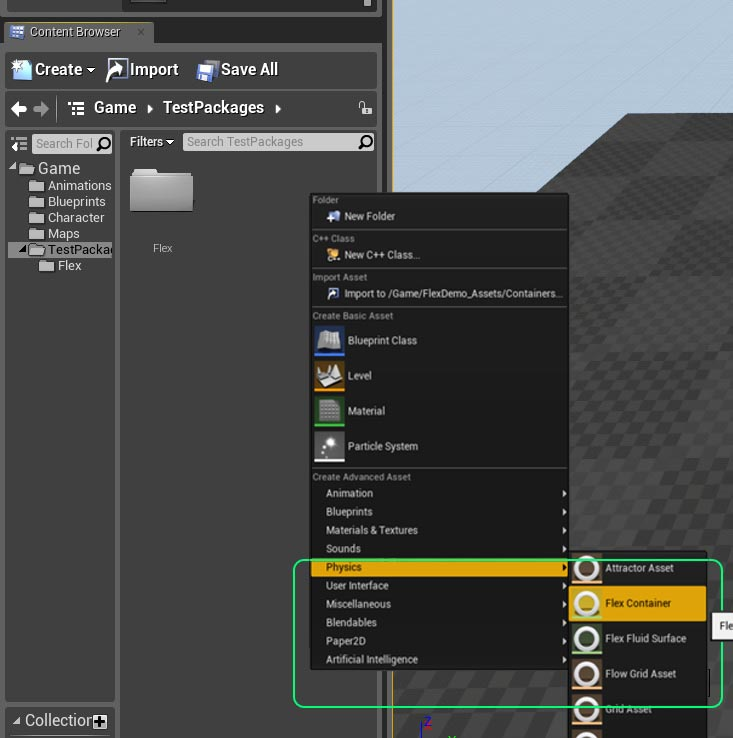

Containers
Containers are where all simulation happens in Flex. They can be thought of as a type of scene, although you can have more than one container active in a level at any one time. Actors, such as particle systems, static meshes, or ropes will emit particles and constraints into the container, and will be simulated as the level is ticked.
Although containers can hold any type of Flex objects, it can make sense to specialize containers for different object types.
To create a container, right-click in the Content Browser, and choose Create Advanced Asset->Physics->FlexContainer.

Give your container an appropriate name, e.g.: FlexRigidContainer, and double click to open it’s property sheet.
Flex Container
The container holds a wide range of simulation parameters, broken into categories according to the objects they affect.
- Radius See Radius section.
- Max Particles Each container can accommodate a fixed number of particles which may be added from any number of sources, e.g. particle emitters, rigid bodies, clothing. If the container is full then new particles will not be added, and objects may appear to stop being simulated. Max particles should be set to a conservative upper bound on the expected number of particles required.
- Debug Draw Enables debug draw for this container when the level is being played. Note that debug draw can also be turned on for all containers via the “FlexVIS” console command.
Simulation
- Num Iterations Flex solves the constraints in an effect iteratively. The number of iterations affects the overall stiffness of the constraints. More complex scenes might require more iterations to reach the level of stiffness achieved with fewer iterations in simpler scenes. For long pieces of hanging cloth 8-10 iterations may be necessary, whereas for simple fluid emitters 1-3 iterations may be sufficient. For performance reasons this should be set to the lowest number possible to achieve the desired effect.
- Num Substeps Substeps allow subdividing the game’s time-step for more accurate simulation. Increasing the number of substeps reduces the chance of missed collisions and tunneling. Each substep will perform collision detection and Num Iterations (see above) constraint solves. So a setting of 2 substeps and 3 iterations performs 6 constraint iterations total per-frame which will make objects appear stiffer. Each additional sub-step is also a multiplier on performance cost, for instance 2 substeps will generally take twice as long as 1 to compute.
- Min Frame Rate Controls the minimum frame-rate that Flex will attempt to sub-step. If the actual frame-rate is smaller, Flex will limit the amount of substeps corresponding to the minimum frame-rate parameter. Setting this lower will result in more sub-steps being taken so it should be set as high as possible, (although the simulation will appear to run slower than real-time if the game cannot maintain this frame rate).
- Fixed Time Step Many games use a variable time-step for each frame which can cause stability problems for physics simulations. To avoid this, it is recommended to enable the Fixed Time Step option which will automatically subdivide the game’s frame time into a number of substeps each with a constant time delta. This approach can result in some de-synchronization between physics and animation but should only be disabled if noticeable problems are observed.
- Gravity Constant acceleration applied to all particles at the start of the time-step.
- Sleep Threshold Particles which moved < this distance during the time-step will be set back to their original position. This can be used to stop particles drifting down slopes indefinitely, or to approximate static friction. It does not provide any computational performance advantage as the constraints will still be solved on these particles in order to determine the sleep condition.
- Max Velocity This is a limiter on the maximum particle velocity. It can be used to reduce tunneling when using a low number of sub-steps.
- Max Container Bound Limits the maximum bounding box of the container used to gather collision shapes. This parameter can be used to stop the bounds from growing too large and causing scene queries to return a high number of shapes, e.g.: when particles fall out of the level.
- Relaxation Mode The relaxation mode provides a fine tuning control of how constraints are solved. It can be used to improve convergence (stiffness), which can allow you to reduce the iteration count and improve performance.
- Local In this mode a local averaging is performed per-particle. The sum of all constraints affecting a particle is averaged before updating the position and velocity. This method is very robust and will generally converge even in difficult circumstances, for example when competing or redundant constraints are present. However it tends to converge quite slowly, and requires many iterations to appear stiff. To improve convergence in this mode Relaxation Factor can be set to a value > 1.0, this is called over-relaxation. Values much larger than 1.0 will occasionally cause the simulation to blow up so it should be set carefully.
- Global In this mode the effect of constraints is weighted by a global factor, no averaging is performed. This mode tends to converge faster than the local mode, but may cause divergence in difficult cases. In this mode the relaxation factor, Relaxation Factor should be set to a value < 1.0, e.g.: 0.25-0.5 to ensure convergence. Global relaxation often works well for cloth, and can noticeable improve convergence at low-iteration counts.
- Relaxation Factor See notes the Relaxation Mode for more details on the meaning of this parameter.
- Damping This parameter controls a viscous damping force that acts like an air-resistance on particles. Generally some level of damping is desirable to encourage particles to come to rest quickly.
Collision
- Complex Collision If true then this container will use the complex collision (triangle meshes) from the Unreal assets. If false, it will use the approximate convex mesh shapes associated with each asset. Note that triangle mesh collision is generally less robust than convex collision so this should be disabled where possible, especially when dealing with moving shapes.
- Object Type This is the object type that is used when the container queries the world to find overlapping collision shapes for the Flex particles. To stop an Actor colliding with Flex particles it should disable collision against the object type set on the container, usually this will be left at the default (Flex).
- Response to Channels Controls which types of objects the Flex container will consider when gathering collision shapes from the world. To stop the container particles colliding against a particular object type it’s response should be set to Ignore. Note that Blocking needs to be set up on individual FlexActors to work as expected.
- Collision Distance This is the distance that particles will try to maintain from static objects. Generally it should be > 0.0 and set to some fraction of the radius, i.e.: 0.5*radius.
- Shape Friction The coefficient of friction used for particle collisions against static objects.
- Particle Friction The coefficient of friction used for particle collisions against other particles.
- Restitution Restitution coefficient against static objects.
- Adhesion Adhesion is an attractive force which tries to keep particles in contact with static geometry. It can be used to generate “sticky” liquids that hang on an object when turned upside down.
- Dissipation Dissipation will cause particles to lose energy when they come into contact with each other. This can be used to slow down particles and cause the formation of large piles. It is not momentum conserving so if set too high then particles may appear to freeze in mid-air when they come in contact.
- Collision Margin Particles The collision margin allows expanding the particle’s radius during collision detection against particles. Because Flex performs collision detection once per-substep, new collisions can be missed if a particle moves too far during the step. The next step the new collision is found and the particle will be ejected causing “popping”. Increasing the collision margin reduces the chance of missing collisions by gathering more potential neighbors during collision. Generally it should be set as a fraction of the radius, e.g.: if the radius is set to 15 and you see popping artifacts then increasing the collision margin to 2-5 should resolve any issues. Note that this can impact performance because it greatly increases the number of potential neighbors that are checked for collision.
- Collision Margin Shapes This parameter controls how to expand the particle radius when finding collisions against shapes. This can be increased to avoid missing collisions against static geometry, and is usually best set to some fraction of the Collision Distance. Note that Flex has an internal limit of 4 contacts per-particle, so if this margin is made too large then this limit may be overflowed and contacts dropped.
- Enable CCD For collision against triangle meshes Flex always uses line-segment tests to detect if the particle has passed through the geometry. These tests are performed at the start of the time-step. This option enables a second collision detection pass against triangle meshes at the end of the time-step. This can help resolve tunneling against static shapes when particles are “squished” between some object and the mesh. Generally it should be left disabled unless tunneling artifacts against triangle meshes are noticed as it has high performance cost.
- Shock Propagation Shock propagation is a method for increasing the apparent stiffness of piles and stacks of rigid bodies. It works by artificially increasing the mass of lower bodies so that they become more resistant to pressure from above. Unless trying to generate large piles of particles this can be left disabled.
Cloth
- Wind Applies a global acceleration to particles connected to cloth triangles. Note that the force due to wind is a function of the triangle drag coefficient (see below), so drag should be set > 1.0 to see the effect of wind.
- Drag This is a force similiar to Damping but only affects particles that are connected to cloth triangles. It applies a drag force similiar to air-resistance, taking into account the face orientation relative to the wind and current velocity.
- Lift Lift is a force that acts perpendicular to the triangle plane and the relative velocity. The lift model in Flex is an approximation of the thin-airfoil model and can generate interesting tumbling and fluttering effects as cloth falls.
Fluid
- Fluid When true, particles with the Fluid flag enabled on their Phase will be treated as fluid particles. This means they no-longer use the hard-sphere collision, and instead use a fluid density constraint to maintain a fixed rest density. When this is enabled the particle radius specifies the “smoothing radius” of the fluid kernels.
- Rest Distance The rest distance determines the particle density for fluids. This parameter is a fraction of the particle radius, e.g.: if the particle radius is 15, and the fluid Rest Distance is 0.5 then the density constraint will attempt to keep particles approximately 7.5 units away from each other. Note that the rest-distance has a large impact on the behavior and performance cost of the fluid. Small rest-distances generate a “smoother” fluid because particles are closer together but the smoothing happens over more neighbors making simulation more expensive. Large rest-distances (near 0.75-1.0) make fluids less smooth but mean that less neighbors are considered, making the simulation cheaper. Generally the rest distance should not be < 0.5, a rest distance of 1.0 would mean that particles behave more like hard-spheres again as there is no smoothing.
- Cohesion Cohesion is an attractive force between particles. It is responsible for much of the behavior we assign to fluids. Low cohesion values will mean particles separate freely and do not “gel” together. Cohesion acts similarly to surface tension but tends to generate longer filaments of fluid rather than rounded droplets.
- Surface Tension Surface tension is the tendency for liquids to try and minimize their surface area. This is what gives rise to spherical droplets and the “pinching off” of a stream of water as it separates. Surface tension is quite expensive to calculate so it should not be enabled unless the situation warrants it. Also, surface tension is mostly visible at smaller scales, e.g.: individual droplets, water from a tap. Not for large streams of water.
- Viscosity Viscosity attempts to average the velocity field of the fluid. This can generate fluids that seem to “move together”. It is a similar to, but weaker than, cohesion. Viscosity also helps stabilize the simulation so it should almost always bet set > 0.0.
- Vorticity Confinement Particle based fluid simulations tend to damp their velocity quite quickly. Vorticity confinement is one method for addressing this by re-injecting some rotational motion into the fluid. It is mostly useful for bodies of water, not so much for splashes. It also has some associated performance overhead so should be used sparingly.
{kind=link}